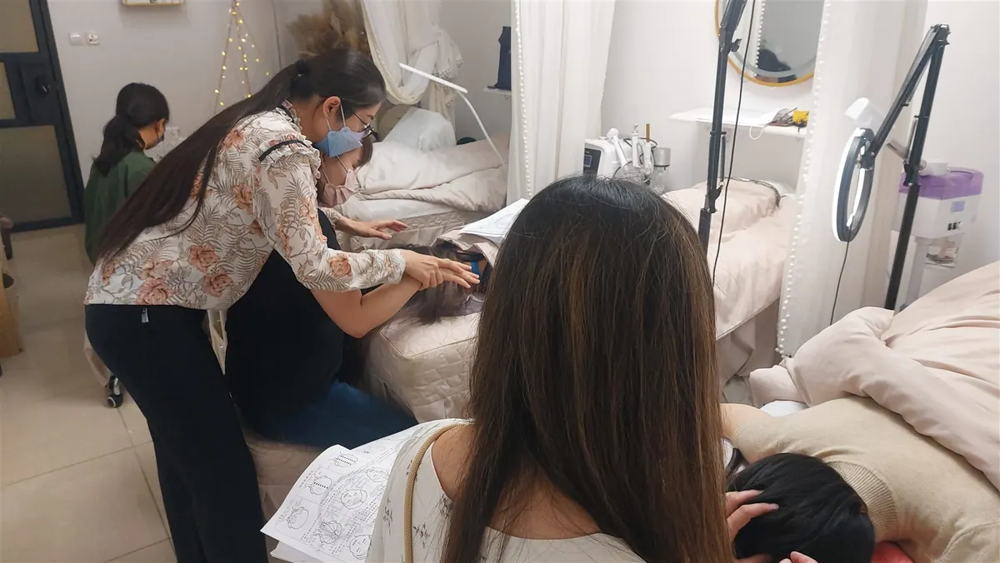

The Bojin Journal · Cheeks & Smile Lines
A 3-Minute Cheek Reset Before You Put On Makeup

Some mornings your cheeks feel a little puffy, a little heavy, or tense from a rough night's sleep, and you already know how the day is going to go: foundation looks fine going on, then by lunchtime it's sitting visibly in your smile lines and gathering under your eyes. Before you reach for concealer, try reaching for three quiet minutes instead. Easing the puffiness and tension in your cheeks first gives your makeup a calmer, smoother surface to sit on. It won't stop creasing, and it's not a substitute for good skincare, but it's a small step that makes a real difference to how your face wears makeup through the day.
Puffy or tense cheeks can make foundation settle into your smile lines by midday. A gentle 3-minute bojin pre-makeup routine helps it glide on smoother. Remember: this is a gentle, supported self-care observation you can test on one side of your face—never a forceful press or medical treatment.
Why does foundation crease into my smile lines by midday?
Overnight, fluid tends to settle in the lowest, softest parts of the face, and for a lot of us that's the cheeks and the fold beside the nose and mouth. On top of that, most of us wake up with some tension already sitting in the jaw and cheeks from clenching in our sleep. Put foundation over a cheek that's a bit swollen and a bit tight, and the product has an uneven surface to sit on from the very start. As the morning goes on, that trapped fluid shifts and settles further, and the makeup sitting over it moves with it, right into the crease of your smile line. A rough night isn't the only trigger, either: a long flight the day before can leave your cheeks just as puffy, and the post-travel reset follows the same idea.
Your foundation formula plays a part, though a heavier one makes it more obvious. What matters most is what's happening underneath before you ever pick up a brush.
How a short cheek reset helps before makeup
If you already know gua sha, this will feel familiar: bojin comes from the same family of Chinese hands-on face care. It's still its own deliberate method. What makes it work is the order you work in, the angle you hold the tool, and the exact spot you're working. Those same three things are what make this quick pre-makeup version useful rather than a simple rub of the cheeks.
The traditional tool is a bojin stick, a slim, polished stainless steel tool shaped to follow the face. For a morning routine, clean fingertips work equally well, especially once you know the moves. Use only a light, makeup-friendly amount of moisturizer or primer: this isn't the moment for a heavy facial oil, since makeup goes on right after. The pressure should be the right, comfortable pressure for you, enough to feel it working, never hard enough to leave your skin pink for long or drag at it.
This is the same order-angle-spot method behind every bojin routine, shortened and timed for the minutes before you do your makeup. Work the puffiness up and out along the cheekbone first, then always finish the movement down toward the ear and jaw so the fluid has somewhere to go.

Your 3-minute pre-makeup cheek reset
Do this right after cleansing, with a light layer of your usual moisturizer or primer, enough for the tool or your fingertips to glide without dragging. Keep every stroke moving up and out, and always finish toward the ear and jaw, never back down into the cheek.

Warm and settle
Rest your palms gently over both cheeks for two or three slow breaths. Let your jaw unclench. This softens the area before you start, so the next steps have less to work against.
Check where you're puffiest
Press lightly along each cheek and notice which side feels fuller or more tender this morning. Mornings vary, so spend a little longer on whichever side needs it rather than treating both sides the same.
Sweep up the cheekbone
Starting beside your nose, glide the tool or your fingertips up and outward along the underside of the cheekbone, angled toward your ear. A few slow passes on each side is enough to ease the tightness that pulls the smile-line area down.
Skim the smile-line area
Work the soft skin right beside the fold with small, gentle upward strokes toward the cheekbone, keeping off the crease itself. You're softening the puffiness around it, not pressing on the line.
Finish toward the ear and jaw
Sweep from your cheek down toward your ear and along the jaw, several unhurried passes. This drains what you loosened instead of leaving it to resettle in the same spot, and it's the step that makes the surface calmer for makeup.
What can I expect?
Most people notice their cheeks look a little less swollen and a touch more even right away, which gives foundation a smoother start. Some mornings the difference is small, especially if you slept well and aren't puffy to begin with: this is a quick assist, not a fix for every makeup day. Give your skin a minute or two afterward so any extra product absorbs before you apply makeup.
Now the honest limits. This won't stop creasing entirely: heat, dry indoor air, and the wrong formula for your skin all play a part too, and no three-minute ritual changes any of that. It also won't lift or reshape your cheeks in any lasting way. What it can do is calm morning puffiness and tension so your makeup sits on a slightly better canvas. And if you notice sudden or one-sided swelling that isn't your usual puffiness, that's worth mentioning to your doctor rather than working through it yourself.
Some mornings call for more patience with your face than others, and that's fine. Three calm minutes before your makeup give your cheeks a fairer start to the day.
Quick answers
Can I do this with my moisturizer already on?
Yes, that's the easiest time to do it. Let your moisturizer or primer sink in for a minute so the tool or your fingertips can move smoothly without dragging, then go straight into your makeup once you're done. You don't need extra oil for this quick version: a light, makeup-friendly layer is enough.
Will this stop my foundation from creasing?
It can help, but I won't promise it'll stop creasing entirely: that also depends on your products and the weather. What this does is ease morning puffiness and tension in the cheeks first, so you're applying makeup onto a calmer, less swollen surface, which tends to sit better and settle into the smile lines less as the day goes on.
How long before I apply makeup after this?
About a minute or two is plenty. Let your skin settle and let any extra product absorb so your foundation doesn't slide. If your skin still looks a little flushed from the movement, give it another minute. That pink usually fades quickly on its own.
Is this different from the smile-lines article on the blog?
Yes. The mid-face routine in that article is a longer, more thorough 5-minute ritual for easing tension and puffiness in general. This one is a shorter version built specifically for the minutes right before you do your makeup: same family of moves, quicker and timed for your morning routine.
See the order, angle, and spot for yourself
Reading about the angle is one thing; watching it is another. My free 3-minute video walks you through the exact order to work in, the angle to hold along your cheekbone, and where to finish, so you can fit it into your routine tomorrow morning.
Watch the free 3-min videoYu-Ting Lan is a Taiwan-based international bojin instructor and the founder of Héhé Studio. She has taught her bojin method to more than a thousand students, from complete beginners to grandmothers, across Taiwan, Hong Kong, and Malaysia.